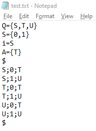

RESTRICCIONES PARA EL ARCHIVO DE TEXTO
Este software funcionará correctamente sólo si se cumplen las siguientes restricciones:
-
COMPONENTES
- Cada uno de los componentes del autómata debe estar separado por un salto de línea
- Los componentes del autómata deben seguir el orden: (estados, alfabeto, estado inicial, estados de aceptación)
- Se debe evitar espacios y caracteres innecesarios, como por ejemplo: S = { a,b, c} ` (forma correcta: S={a,b,c})
- Cada item de los estados, alfabeto y estados de aceptación deben estar separados por coma
- El esado inicial no se debe escribir dentro de llaves (se sabe de forma concreta que sólo es uno)
-
TRANSICIONES
- Se debe colocar el símbolo "$" en una nueva sola línea para indicar el inicio y fin de las transiciones
- Para los N estados del autómata se debe indicar las N transiciones por los N símbolos del alfabeto
- En caso de que X estado no cuente con una transición específica para X símbolo del alfabeto, se debe colocar un guión
- Cada transición está compuesta por un estado de partida, el símbolo que hace la transición y un estado de destino
- Los componentes de cada una de las transiciones deben de estar separadas por punto y coma
- Cada transición debe escribirse en una sóla línea, no es válido escribir más de una transición en la misma línea
EJEMPLO
